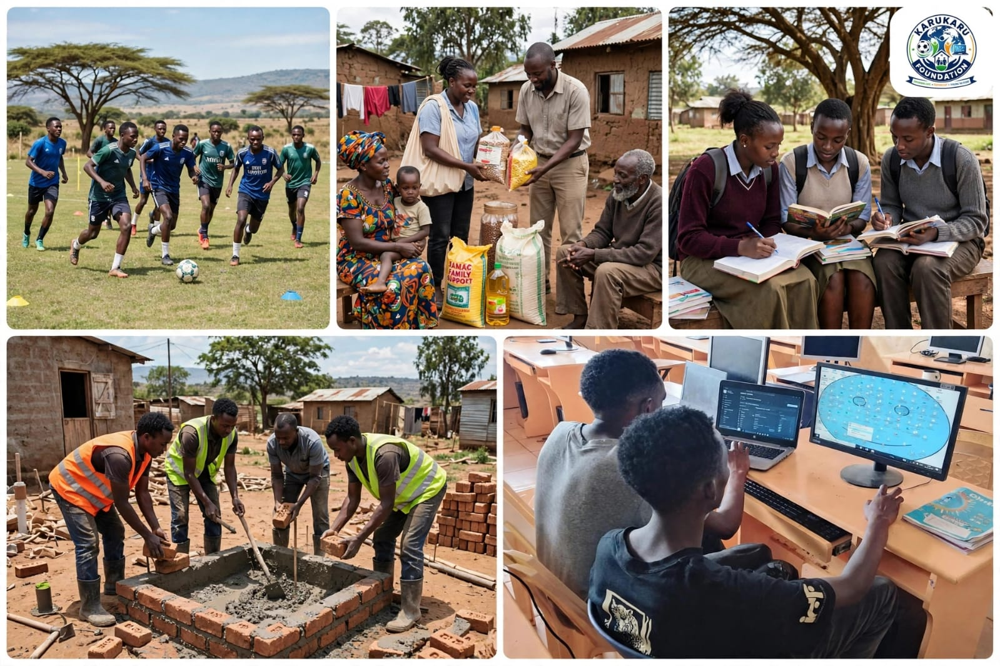

OUR IMPACT

A youth sports initiative focused on identifying, developing and supporting talented young athletes.
Future ProjectA technology project designed to help young people develop computer, digital and coding skills.
Future ProjectSupporting vulnerable families through community outreach, basic needs assistance and care initiatives.
Future ProjectSupporting young people through mentorship, educational guidance, career awareness and learning opportunities.
Future ProjectCommunity activities such as environmental projects, clean-ups, tree planting and volunteering.
Future ProjectHelping young people build skills, confidence and knowledge for future education, careers and opportunities.
Future ProjectYou can support KARUKARU FOUNDATION through volunteering, partnerships, skills and community participation.
Get Involved